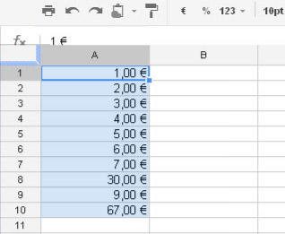
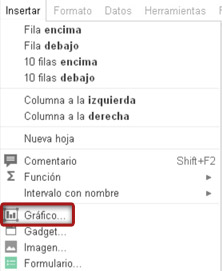
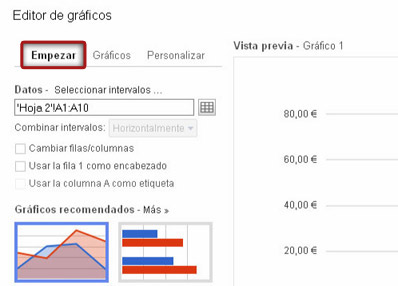
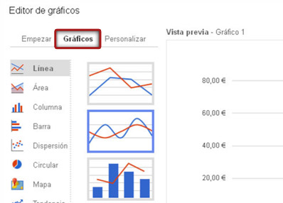
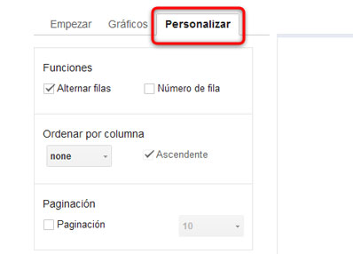

Cuando trabajamos con una hoja de cálculo podemos añadir gráficos de líneas, de barras y de mapas. Otra posibilidad es guardar un gráfico como imagen e insertarla en una hoja de cálculo. Veremos cómo hacerlo a continuación:
Para crear un gráfico, seleccionaremos las celdas que contienen los datos a incluir en el gráfico.

Seleccionamos el icono Gráfico de la barra del menú o Insertar > Gráfico. A continuación, se abre el cuadro de diálogo para gráficos.

En la pestaña Empezar, podemos modificar el intervalo de celdas que se incluirá en el gráfico.

Si seleccionamos una configuración de diseño básica pincharemos en la pestaña Gráficos y observaremos los gráficos recomendados.

Podemos personalizar nuestro gráfico completando los campos de la pestaña Personalizar.

Al hacer clic en Insertar el gráfico aparecerá en la hoja de cálculo. Si deseamos volver a modificar la hoja de cálculo sin insertar ningún gráfico, haremos clic en Cancelar.